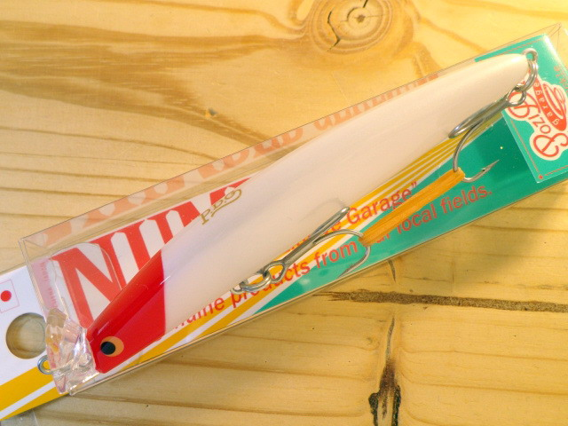
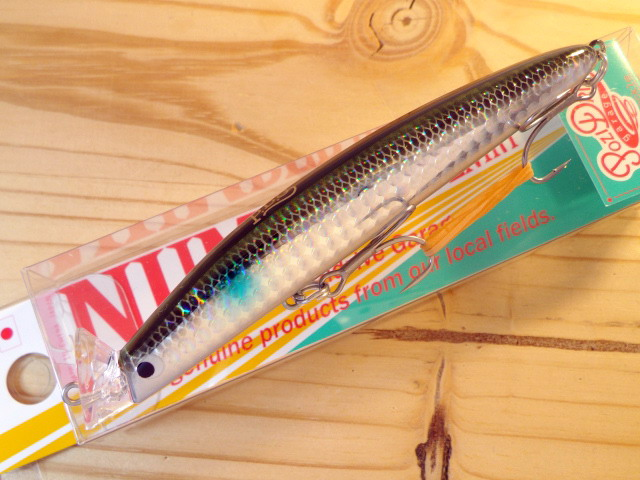
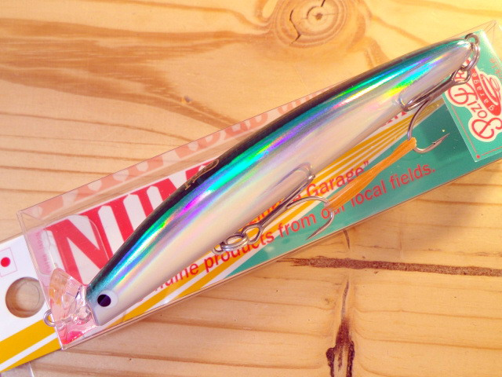
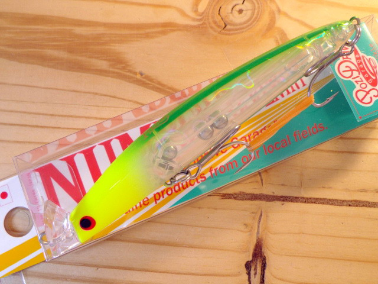
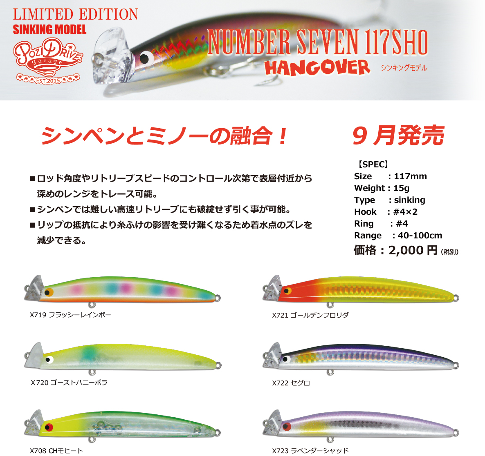
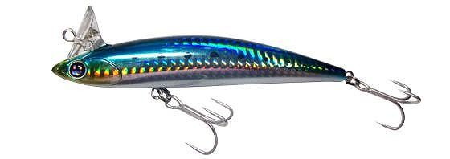

ナンバーセブン117F
（NUMBER SEVEN 117F）
ナンバーセブン117F（NUMBER SEVEN 117F）はPOZIDRIVE GARAGE（ポジドライブガレージ）のシャローランナーです。
上部へ張り出した扇形の特殊リップが特徴の「対ストリームシャローランナー」。細身・軽量のボディでありながら、アップストリームでも確実に抵抗を感じられ、テールを振らない完全なローリングアクションで泳ぐのが最大の魅力です。

画像出典:キングフィッシャー
スペック
- メーカー
- POZIDRIVE GARAGE（ポジドライブガレージ）
- タイプ
- フローティング
- 全長
- 117mm
- 自重
- 13g
- レンジ
- 0〜40cm
- フック
- #4×2
- リング
- #4
- ターゲット
- シーバス
- 価格
- 2,090円（税込）
▼今すぐチェック
ナンバーセブン117Fの特徴
特殊リップで流れを読み解く、プレッシャーに強い細身の対ストリームシャローランナー
-
潜らせるためではない扇形の特殊リップ
上部へ張り出した扇形のリップは、基本的に潜らせるための機構ではなく、細身ボディには不利な泳ぎの立ち上がりと、水の抵抗の感知を補うための構造。流れの中でもルアーの状態を把握しやすい。
-
アップストリームでも抵抗を感じて引ける
シャローランナーが苦手としがちなアップストリームでも、確実に抵抗を発生させられる。細身・軽量でプレッシャー下に強いシルエットながら、類を見ない飛距離も備えている。
-
テールを振らない完全なローリングアクション
テールを振らない完全なローリングアクションで泳ぎ、スレた魚にも違和感を与えにくい。高浮力を活かした超デッドスローの水面引きもでき、春先のバチパターンにも対応する。
ナンバーセブン117Fの使い方
基本はスロー〜ミディアムのただ巻き。流れに対してアップストリームやアップクロスに投げても、特殊リップのおかげで抵抗を感じながらレンジ0〜40cmを引いてこられる。
バチ抜けなどで水面を意識している魚には、高浮力を活かしてロッドを立て、超デッドスローで水面直下を引くのが有効。流れの中のヨレや明暗に、角度を変えながらコースを通していくのが組み立ての基本です。
ナンバーセブン117Fの得意な状況
河川や河口など、流れのあるシャローエリアが主戦場。
特に、上流側に投げて流れに逆らって引くアップストリームの釣りや、プレッシャーが高く細身のシルエットが効く場面で強い。春先のバチパターンでも、水面引きで使える1本です。
ワンポイント
アップストリームでは、巻き速度を流れより少し速くする程度に抑えると、リップの抵抗を感じながらローリングアクションを維持しやすくなります。
抵抗が抜けたと感じたら、流れのヨレに入ったサイン。そこで巻きを緩めて食わせの間を作ると効果的です。
ナンバーセブン117Fと117SHOの使い分け
| モデル | 全長／自重 | 得意な場面 |
|---|---|---|
| 117F | 117mm／13g | フローティングのシャローランナー。レンジ0〜40cm、流れの中のシャローに（本記事のモデル） |
| 117SHO | 117mm／15g | ヘッドダウンシンキング。シンペンとミノーの要素を持ち、表層〜深めのレンジまで探れる |
同じナンバーセブンでも、117Fはシャローをキープするフローティング、117SHOはレンジを可変できるヘッドダウンシンキングと役割が違う。117SHOの詳細はナンバーセブン117SHOの記事で紹介しています。
人気カラー
ナンバーセブン117Fは全12色展開。シャローのシーバス狙いでオススメのカラーを厳選して紹介します。

#01 RH（レッドヘッド）定番のレッドヘッド。濁りやナイトゲームでもシルエットを出しやすい。

#03 ボラシャローに多いボラ（イナッコ）パターンに合わせやすいナチュラル系。

#02 サヨリ細身ボディに合うサヨリカラー。サヨリやカタクチなど細長いベイトのパターンに。

#08 CHモヒートチャートヘッドの高視認カラー。マズメや濁り潮、ナイトゲームのアピールに。
画像出典:キングフィッシャー
ナンバーセブン117Fに似ているルアー
-

ナンバーセブン117SHO ポジドライブガレージ 詳細はこちら＞同じナンバーセブンの117mmヘッドダウンシンキングモデル。シンペンとミノーを融合させた設計で、117Fのシャロー（0〜40cm）より下のレンジまで探りたいときに持ち替えたい1本。
-

ラビット109 ニコデザインオフィス 詳細はこちら＞全長109mm・自重16.5gのフローティングミノー。ウォブリングを一切排除したローリングアクションで、ナンバーセブン117Fと同じく「テールを振らないロール」で浅場のシーバスを狙うシャローミノー。
-
 コモモSF-125
ima
詳細はこちら＞
コモモSF-125
ima
詳細はこちら＞
全長125mmのシャローランナーの定番。水面直下〜50cm前後を得意とし、レンジ帯が近い。流れの緩いシャローを広く探るサーチベイトとして使い分けたい1本。